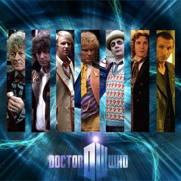

| The First Doctor |
| The Second Doctor |
| The Third Doctor |
| The Fourth Doctor |
| The Fifth Doctor |
| The Sixth Doctor |
| The Seventh Doctor |
| The Eighth Doctor |
| The Ninth Doctor |
| The Tenth Doctor |
| The Eleventh Doctor |
The Doctors
Doctor Who is a British science-fiction television programme produced by the BBC. The programme depicts the adventures of a Time Lord—a time-travelling humanoid alien known as the Doctor. He explores the universe in his TARDIS (acronym: Time and Relative Dimension in Space), a sentient time-travelling space ship. Its exterior appears as a blue British police box, which was a common sight in Britain in 1963 when the series first aired. Along with a succession of companions, the Doctor faces a variety of foes while working to save civilisations, help ordinary people, and right wrongs.
The show has received recognition as one of Britain's finest television programmes, winning the 2006 British Academy Television Award for Best Drama Series and five consecutive (2005–2010) awards at the National Television Awards during Russell T Davies's tenure as executive producer.[2][3] In 2011, Matt Smith became the first Doctor to be nominated for a BAFTA Television Award for Best Actor. In 2013, the Peabody Awards honoured Doctor Who with an Institutional Peabody "for evolving with technology and the times like nothing else in the known television universe."[4] The programme is listed in Guinness World Records as the longest-running science fiction television show in the world[5] and as the "most successful" science fiction series of all time—based on its over-all broadcast ratings, DVD and book sales, and iTunes traffic.[6] During its original run, it was recognised for its imaginative stories, creative low-budget special effects, and pioneering use of electronic music (originally produced by the BBC Radiophonic Workshop).
The show is a significant part of British popular culture;[7][8] and elsewhere it has become a cult television favourite. The show has influenced generations of British television professionals, many of whom grew up watching the series.[9] The programme originally ran from 1963 to 1989. After an unsuccessful attempt to revive regular production in 1996 with a backdoor pilot in the form of a television film, the programme was relaunched in 2005 by Russell T Davies who was showrunner and head writer for the first five years of its revival, produced in-house by BBC Wales in Cardiff. Series 1 in the 21st century, featuring Christopher Eccleston as the ninth incarnation, was produced by the BBC. Series 2 and 3 had some development money contributed by the Canadian Broadcasting Corporation (CBC), which was credited as a co-producer.[10] Doctor Who also spawned spin-offs in multiple media, including Torchwood (2006–11) and The Sarah Jane Adventures (2007–11), both created by Russell T Davies; K-9 (2009–10), the four-part video series P.R.O.B.E. (1994–96), and a single pilot episode of K-9 and Company (1981). There also have been many spoofs and cultural references of the character in other media.
Eleven